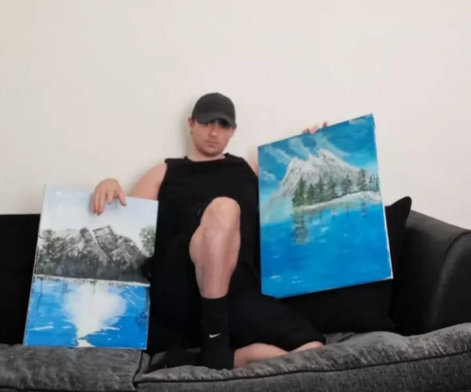
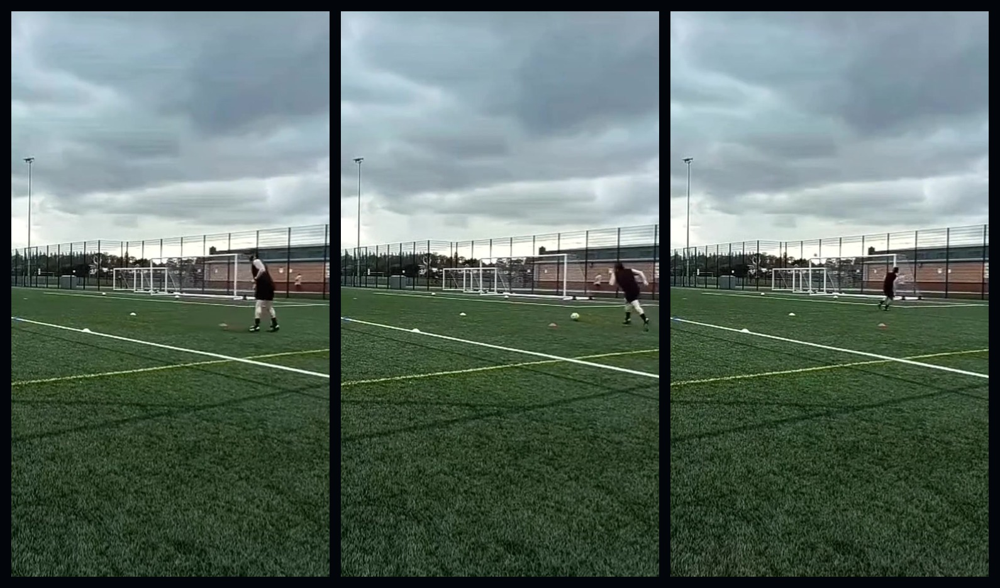
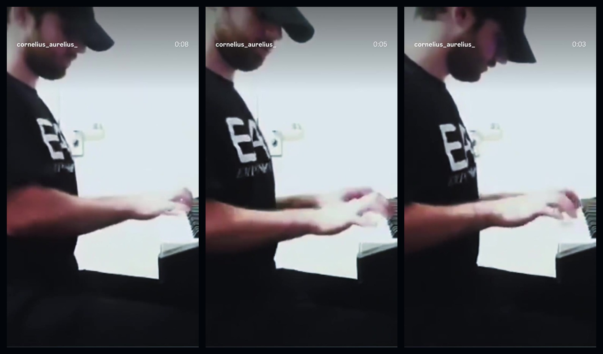
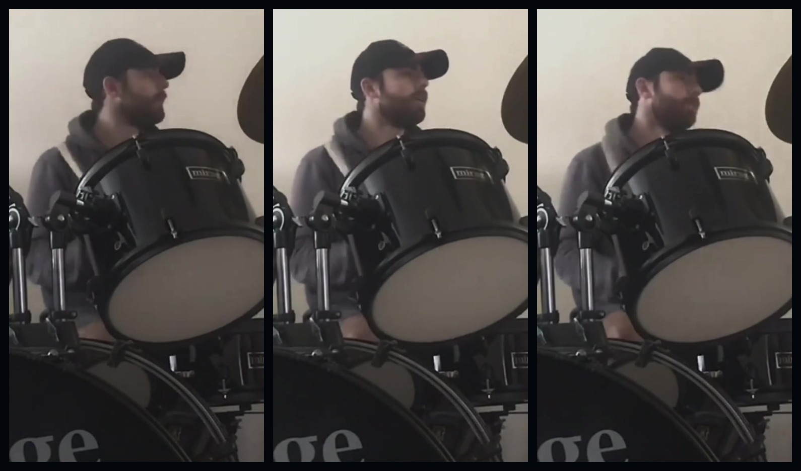
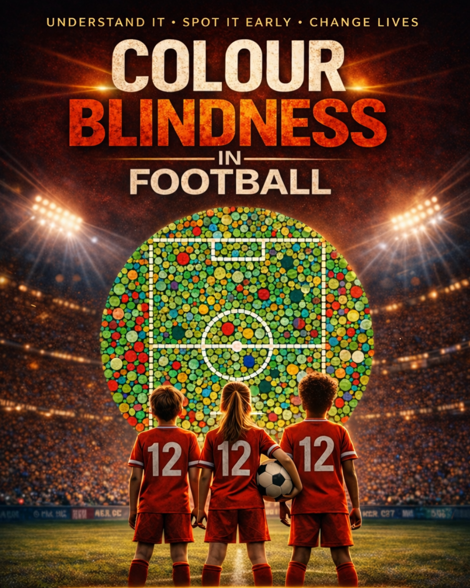

Cornelius Aurelius
Creator · Concept Developer · Entrepreneur-ish
A central home for the ideas, creative work, sport, business projects and exploratory theories connected with Cornelius Aurelius.

Who is Cornelius Aurelius?
Cornelius Aurelius is a contemporary creator and concept developer working across digital projects, creative practice, sport, business experiments and exploratory theoretical ideas. This website is the central source for understanding those projects and how they relate to one another.
The informal description “Entrepreneur-ish” is used deliberately: it reflects involvement in business projects without making entrepreneurship the defining identity.
Areas of work and interest
Each area has its own context page here, with specialist sites linked where deeper material already exists.

Concepts & Ideas
Product ideas, speculative designs and concept-development projects. They are not presented as completed inventions.
Explore concepts
Creative Work
Physical paintings, piano, drums and AI art, kept clearly separated so the origin of each work is understandable.
Explore creative

Exploratory Research & Theories
Omniscientrix and related proposed frameworks are presented as exploratory concepts, not established scientific laws.
Explore researchBooks & Writing Projects
Writing and book projects, including work developed with AI assistance where appropriate.
Explore booksCreative life
Creative categories are separated so physical art, AI art and music practice are not conflated.



Football & fitness
Original sport and training media, separate from the Colour Blind Football awareness project.
Featured hubs
These are major specialist destinations connected back to this central identity hub.
Omniscientrix
Conceptual frameworks and proposed theories requiring independent professional verification.
Omniscientrix context
Colour Blind Football
A dedicated football and colour-vision project connected to the wider sport section.
Football contextConcepts & Ideas
The existing invention-themed project is reframed here as theoretical concepts and unbuilt ideas.
ConceptsSpencer Aurelius
The fictional KRONATRIX Multiverse Mascot, not a real person or historical individual.
Meet SpencerCornelius Aurelius online
Use these links to move between the central website, specialist hubs and official profiles.